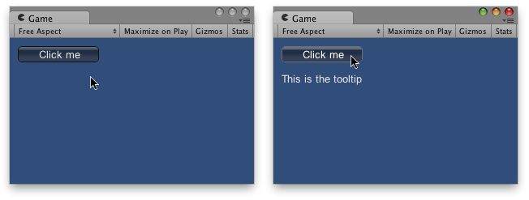

The tooltip of the control the mouse is currently over, or which has keyboard focus. (Read Only).
When you create GUI controls, you can pass in a tooltip for them. This is done by changing the content parameter to take a custom-made GUIContent object, rather than just passing in a string to display.
When the mouse is over a control with a tooltip, it sets the global GUI.tooltip value to the tooltip you pass in. If the mouse is not hovering over any control, the value is set to the control which has keyboard focus. At the end of the OnGUI code, you can make a label showing the value of GUI.tooltip function OnGUI () {
// Make a button using a custom GUIContent parameter to pass in the tooltip.
GUI.Button (Rect (10,10,100,20), GUIContent ("Click me", "This is the tooltip")); // Display the tooltip from the element that has mouseover or keyboard focus
GUI.Label (Rect (10,40,100,40), GUI.tooltip);
}
using UnityEngine; using System.Collections; public class ExampleClass : MonoBehaviour { void OnGUI() { GUI.Button(new Rect(10, 10, 100, 20), new GUIContent("Click me", "This is the tooltip")); GUI.Label(new Rect(10, 40, 100, 40), GUI.tooltip); } }
import UnityEngine import System.Collections public class ExampleClass(MonoBehaviour): def OnGUI() as void: GUI.Button(Rect(10, 10, 100, 20), GUIContent('Click me', 'This is the tooltip')) GUI.Label(Rect(10, 40, 100, 40), GUI.tooltip)
You can use the ordering of elements to create 'hierarchical' tooltips:
function OnGUI () {
// This box is larger than many elements following it, and it has a tooltip.
GUI.Box (Rect (5, 35, 110, 75), GUIContent ("Box", "this box has a tooltip")); // This button is inside the box, but has no tooltip so it does not
// override the box's tooltip.
GUI.Button (Rect (10, 55, 100, 20), "No tooltip here"); // This button is inside the box, and HAS a tooltip so it overrides
// the tooltip from the box.
GUI.Button (Rect (10, 80, 100, 20),
GUIContent ("I have a tooltip", "The button overrides the box"));
// finally, display the tooltip from the element that has
// mouseover or keyboard focus
GUI.Label (Rect (10,40,100,40), GUI.tooltip);
}
using UnityEngine; using System.Collections; public class ExampleClass : MonoBehaviour { void OnGUI() { GUI.Box(new Rect(5, 35, 110, 75), new GUIContent("Box", "this box has a tooltip")); GUI.Button(new Rect(10, 55, 100, 20), "No tooltip here"); GUI.Button(new Rect(10, 80, 100, 20), new GUIContent("I have a tooltip", "The button overrides the box")); GUI.Label(new Rect(10, 40, 100, 40), GUI.tooltip); } }
import UnityEngine import System.Collections public class ExampleClass(MonoBehaviour): def OnGUI() as void: GUI.Box(Rect(5, 35, 110, 75), GUIContent('Box', 'this box has a tooltip')) GUI.Button(Rect(10, 55, 100, 20), 'No tooltip here') GUI.Button(Rect(10, 80, 100, 20), GUIContent('I have a tooltip', 'The button overrides the box')) GUI.Label(Rect(10, 40, 100, 40), GUI.tooltip)
Tooltips can also be used to implement an OnMouseOver / OnMouseOut messaging system:
var lastTooltip : String = " "; function OnGUI () { GUILayout.Button (GUIContent ("Play Game", "Button1")); GUILayout.Button (GUIContent ("Quit", "Button2")); if (Event.current.type == EventType.Repaint && GUI.tooltip != lastTooltip) { if (lastTooltip != "") SendMessage (lastTooltip + "OnMouseOut", SendMessageOptions.DontRequireReceiver); if (GUI.tooltip != "") SendMessage (GUI.tooltip + "OnMouseOver", SendMessageOptions.DontRequireReceiver); lastTooltip = GUI.tooltip; } } function Button1OnMouseOver () { Debug.Log ("Play game got focus"); } function Button2OnMouseOut () { Debug.Log ("Quit lost focus"); }
using UnityEngine; using System.Collections; public class ExampleClass : MonoBehaviour { public string lastTooltip = " "; void OnGUI() { GUILayout.Button(new GUIContent("Play Game", "Button1")); GUILayout.Button(new GUIContent("Quit", "Button2")); if (Event.current.type == EventType.Repaint && GUI.tooltip != lastTooltip) { if (lastTooltip != "") SendMessage(lastTooltip + "OnMouseOut", SendMessageOptions.DontRequireReceiver); if (GUI.tooltip != "") SendMessage(GUI.tooltip + "OnMouseOver", SendMessageOptions.DontRequireReceiver); lastTooltip = GUI.tooltip; } } void Button1OnMouseOver() { Debug.Log("Play game got focus"); } void Button2OnMouseOut() { Debug.Log("Quit lost focus"); } }
import UnityEngine import System.Collections public class ExampleClass(MonoBehaviour): public lastTooltip as string = ' ' def OnGUI() as void: GUILayout.Button(GUIContent('Play Game', 'Button1')) GUILayout.Button(GUIContent('Quit', 'Button2')) if (Event.current.type == EventType.Repaint) and (GUI.tooltip != lastTooltip): if lastTooltip != '': SendMessage((lastTooltip + 'OnMouseOut'), SendMessageOptions.DontRequireReceiver) if GUI.tooltip != '': SendMessage((GUI.tooltip + 'OnMouseOver'), SendMessageOptions.DontRequireReceiver) lastTooltip = GUI.tooltip def Button1OnMouseOver() as void: Debug.Log('Play game got focus') def Button2OnMouseOut() as void: Debug.Log('Quit lost focus')